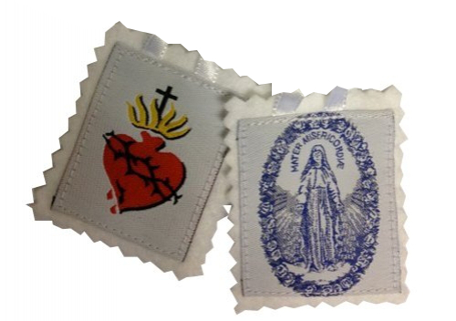
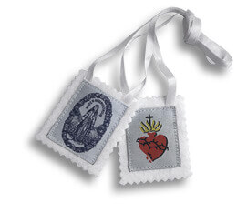
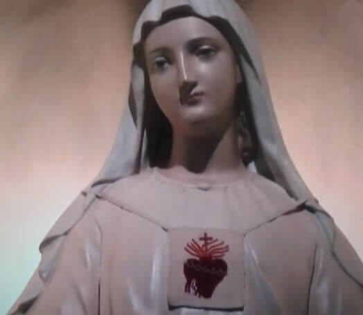
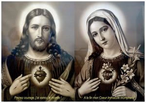
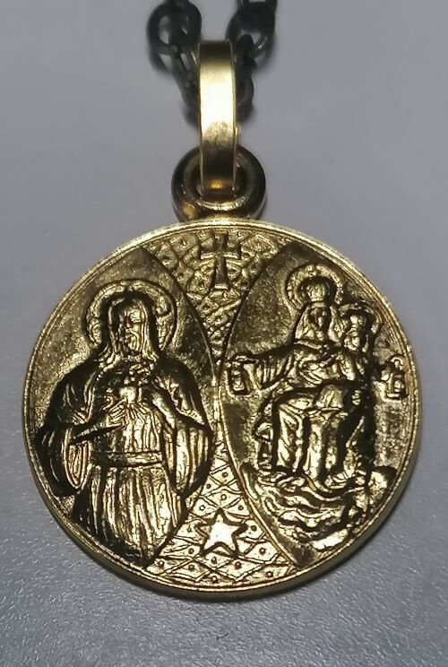
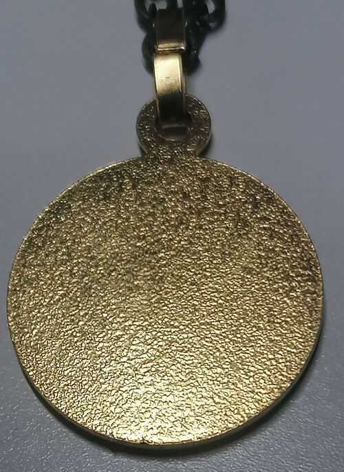

sainte-marie.ch
Le scapulaire du sacré cœur de Jésus
Le 19 novembre 2022
Sommaire
- Qu'est ce qu'un scapulaire ?
- Qu'est ce que ce scapulaire me confère ?
- Comment se faire imposer ce scapulaire ?
- A quoi s'engage-t-on en se le faisant imposer ?
- Quand peut-on l'enlever ?
- La médaille-scapulaire
- Comment obtenir ce scapulaire ?
Les informations précises sur ce scapulaire sont disponibles dans son livret (publié
en 1901).
Ainsi que dans le livre "Instructions sur les indulgences et confréries" (publié en 1832) (voir p. 293).
Qu'est ce qu'un scapulaire ?
 Ci-dessus, le scapulaire du sacré-cœur de Jésus. Sur la seconde image, c'est Marie (Notre-Dame de Pellevoisin) qui le porte.
Il s'agit ainsi d'un vêtement (le terme de "collier" n'est pas correcte), qui doit être béni et imposé par un prêtre ou un diacre, sous des prières propres. On utilise le verbe "imposer" quand on parle de consacrer un scapulaire à un fidèle, bien que c'est le fidèle qui demandera à se le faire consacrer.
Lorsque le fidèle se fait imposer son scapulaire, un sacrement est ancré en lui. Le scapulaire est là pour rappeler le sacrement reçu.
Le scapulaire du Sacré-Cœur de Jésus
Ce scapulaire est une dévotion qui permet de s'unir intimement, par le cœur Immaculé de Marie, Mère de Miséricorde, au cœur de Jésus qui a été transpercé à la croix.
Le 8 décembre 1876 à Pellevoisin (Diocèse de Bourges), la Vierge Marie confie à Estelle Faguette : "Vois les grâces que je répands sur ceux qui porteront le scapulaire avec confiance" En disant ceci, écrira Estelle, la Sainte Vierge étandit ses mains ; il en tombait une pluie abondante, et dans chacune de ces gouttes, il me semblait voir les grâces écrites telles que piété, salut, confiance, conversion, santé.
En 1900, le pape Léon XIII reconnait officiellement le scapulaire du Sacré-Cœur et encourage tous les fidèles (baptisés ou catéchumènes de l'Église catholique) à le porter. De nombreuses indulgences lui sont accordées par l'Église.
Qu'est ce que ce scapulaire me confère ?
Tout d'abord, des indulgences (approuvées par le Pape Leon XIII). Pour être plus précis :
- Indulgences de dix ans et dix quarantaines ;
- Tous les jours de Carême
- Tous les dimanches de l'Avant
- Tous les jours des Quatres-Temps
- Indulgences de sept ans et de sept quarantaines chaque jour de la neuvaine qui précède la fête du sacré-cœur de Jésus
Cela dit, il s'agit surtout d'un engagement envers le cœur de Jésus, par le biais de prières et dévotions à Marie. Le but ici n'étant pas de tomber dans un paganisme de collection d'indulgences et du port d'un objet magique qui nous les confères.
Voyons plutôt cela comme un moyen de toucher le plus complétement possible au mystère du coeur immaculé de la Vierge. Cela, en suivant les enseignements comportementaux ancrés dans la pure tradition catholique. Enseignés par les saints pères pendant près de 19 siècles.
Comment se faire imposer ce scapulaire ?
A l'époque, il fallait passer par un prêtre de la confrérie. Aujourd'hui, n'importe quel prêtre ou diacre peut faire imposer le scapulaire à n'importe quel fidèle. Le déroulement de l'imposition du scapulaire peut être téléchargé ici.
{kind=link}
A quoi s'engage-t-on en se le faisant imposer ?
Sur le papier, il n'y a aucune autre obligation que celle de porter le scapulaire (p. 5). Pour toucher les indulgences, par-contre, il faudra prier la Vierge Marie encore et encore. Se lier d'amour envers elle, y développer une dévotion.
De plus, si on applique strictement le livret, il faudra se confesser et communier le jour auquel est attachée chaque indulgence plénière, à moins qu'on ait l'habitude de se confesser tous les huit jours. Cependant, le sanctuaire de Pellevoisin fait aujourd'hui fi de cette dernière condition.
Il faut bien s'assurer que l'on est prêt à le porter toute sa vie avant de se le faire imposer. C'est un engagement que l'on prend devant le Christ, le non-respect de cet engagement revient directement à une profanation. Autant ne pas se le faire imposer plutot que de briser un engagement comme celui-ci.
Quand peut-on l'enlever ?
"Il est nécessaire que les deux morceaux d'étoffe soient séparés et pendent, l'un sur la poitrine et l'autre sur le dos ; qu'on le porte toujours, nuit et jour, sans cela on ne pourrait gagner les indulgences." (p. 5-6)
Tel que strictement décrit dans le livret, on ne peut jamais s'en séparer.
Même pas sous la douche ou pour aller se baigner (contrairement à ce que beaucoup peuvent dire).
Pour ne pas l'abîmer,
Pie XII et Jean-Paul II en avaient un second plastifié et résistant à l'eau. (Ils portaient
le scapulaire N-D du mont carmel).
On notera que pour que le port ne soit pas interrompu, il faut d'abord mettre sur soi le second
scapulaire
et uniquement ensuite enlever le premier.
Certains diront qu'il faut le porter "comme un vêtement" et que conséquemment il peut être porté quand on le souhaite, de jour comme de nuit. Mais ça n'est pas ce qui à été validé par Supérieur générale des oblats de Marie immaculé en décembre 1900. D'autres diront qu'il doit être porté "moralement", jour comme nuit, mais qu'il peut être enlevé durant la douche. Cet argument est mauvais; on peut en acheter un second et le faire plastifier. Ou simplement le remplacer par la médaille-scapulaire, par exemple quand on est sous la douche.
La médaille-scapulaire
Le pape St Pie X a concédé la faculté de remplacer l'étoffe par une médaille scapulaire.
Cela prinicpalement car l'étoffe peut rapidement s'abimer (notemment si l'on vit dans des pays
ou il fait chaud).
La médaille-scapulaire a été autorisée dans le décret "Cum Sacra" de Pie X au 16 décembre 1910.
La première médaille que porte le fidèle doit être bénie et imposée de la même manière que son scapulaire
sous forme d'étoffes
Bien que la médaille soit autorisée, le saint-siège recommande fortement de porter le scapulaire sous
forme d'étoffes, tel que la Vierge Marie l'a demandée.
Le recto de cette médaille doit porter l'effigie de Notre Seigneur Jésus-Christ montrant son
Coeur très Sacré et le verso une image de la Bienheureuse Vierge Marie.
La médaille ci-dessous, par exemple, est une médaille valide:
Celle-ci par contre, bien que présentée sous le nom de médaille-scapulaire, ne l'est absolument pas :
 Comment obtenir ce scapulaire ?
En l'achetant en ligne (Ex:
Parvis.ch) ou en se rendant directement au sanctuaire N-D de Pellevoisin.
Pour ce qui en est de la médaille-scapulaire, vérifiez bien avant de l'acheter que les 2 faces
soient conformes aux exigences.
Rappelons-nous que le suivi scrupuleux de toutes ces règles est la uniquement pour porter le plus grand respect à notre reine des cieux et éviter toute profanation.